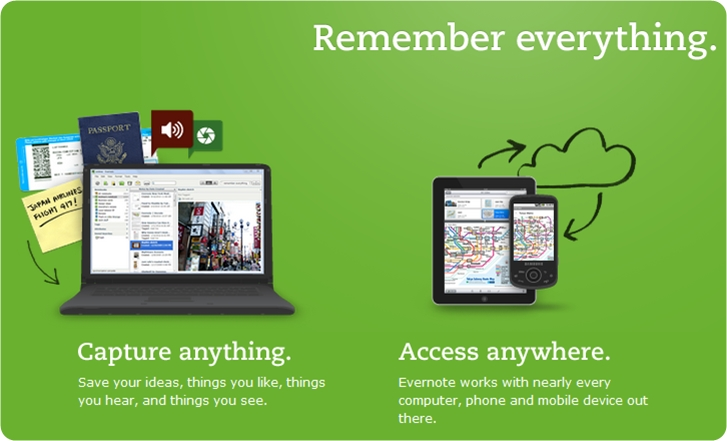

Evernote 4 出来有一段时间了，这个版本摈弃了.net，转到了Native C++，这个方向绝对是正确的，看看评测就知道，4.0的运行速度比3.5提高了很多，占用资源则要少得多。最近又出了中文版，于是我把OneNote的数据导了过来，准备试用一周，感受一下与OneNote的区别，再决定是否使用。
之所以在OneNote用得顺手的时候这么大费周章，主要是看中他的多平台同步以及比OneNote灵活的标签功能，在电脑不在身边的时候，用Android客户端查阅确实是很诱惑我。
但是试用一段时间后我发现了一些问题，主要有以下几点：
1. 表格编辑极弱。
虽说4.0版在这方面已经有了显著进步，现在可在表格生成后继续进行插入行为（这真是个重大改进…），但是在习惯了OneNote的tab键一按就智能生成一个表格的情况下，转到EverNote后发现，这方面他简直烂到极点，它甚至连一个单元格的大小都无法随意改动。
2. 标签下的文档无法排序。
在我以月份为标题进行办公文档存放的情况下，顺序显得杂乱无章，完全无法按照月份顺序罗列，这点让我很崩溃。
3. 使用单一数据库。
我使用EverNote，主要用来进行知识管理与工作事务备忘，信息量算是比较大的。而单一数据库，在使用一年半载的情况下，也许效率不会有明显影响，但是随着数据库的增大，性能问题只会越来越严重。
4. 编辑器太弱了。
没有HTML模式也就算了，文字编辑时中文输入法文字选框无法在光标处显示，图片插入排版混乱，将文字复制到其他地方后字体混乱等等问题比比皆是。归根究底，还是得升级编辑器。作为一个笔记软件，你编辑功能这么弱，搞再多其他的东西都没用，这是致命伤。
鉴于以上四点，虽然EverNote的手机同步与标签功能确实很吸引我，但是一晚上用下来，很多细节还是让我无法适应，与OneNote的差距较为明显。也许正如善用佳软所说，这是个属于未来的软件，我一向很看好国外这种员工不超过50人的小公司所开发的产品，也许今后某个版本将这些功能都改进了，我会再次使用。
目前，我继续使用 Dropbox + OneNote 的方式来同步办公电脑与笔记本之间的工作事务。当然，这需要与G#F#W进行一点小小的对抗。